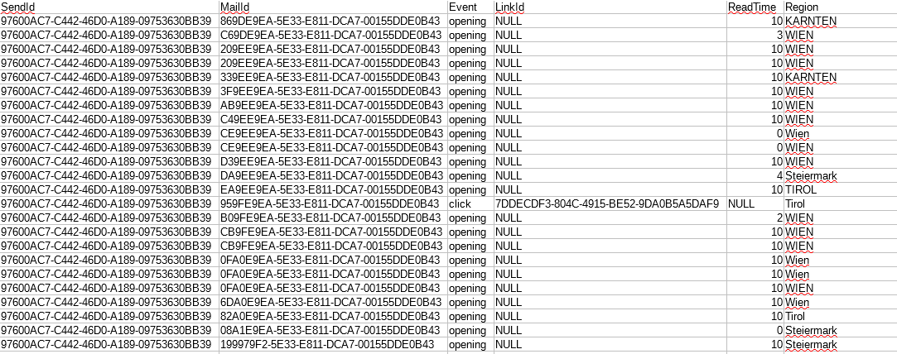

Report
Group Members: Stefan Wolfsteiner, Lisa Kritzinger, Hiuwai Chan
Dataset
For this project we are visualizing tracking data of email newsletter campaigns. The data was provided by a company at which one of the group members wworks.
The dataset consits of two different parts. The actual Behavioural Data and the Meta Data of the newsletter campaigns.
All data is completly anonymized, no linking to the actual recipients is possible.
- Meta-Data of Newsletter Campaign
- ID, Name, Time of Sending, Sent Mails, Total Clicks and Openings
- Behavioural Data (All include Send ID and Mail ID)
- Openings - Location (based on IP)
- Read Times - Duration (up to 10 seconds)
- Clicks - Link ID, Location (based on IP)
Meta-Data

Behaviour Data

Tasks
- The user can see all the newsletter campaigns in the datset.
- Proposed solution: Show a table with all campaigns.
- The user can quickly evaluate the performances of all the campaigns in the dataset and compare them.
- Proposed solution: Show a scatterplot comparing the Click Rate and the Open Rate for all the campaigns.
- The user can compare two selected newletter campaigns by their key performance indicators.
- Proposed solution: Two campaigns can be selected in the table and grouped bar charts then show the Open Rate, Click Rate and Reading Duration.
- The user can also compare the performance indicators of the selected campaigns for different regions.
- Proposed solution: A performance indicator can be selected in the grouped bar charts
and this indicator is then displayed for each region on top of a map.
Implementation
Here you can see the final result of our implementation:
 >
>
Each visualisation (Table, Scatterplot, Grouped Bar Charts, Bar Charts on map) are implemented with d3.js.
All but the table are visualized with svg elements. The table is build with HTML, but also using d3.js.
Limitations
Our solution can handle just a small number of campaigns (13 campaigns in our example dataset), if there were a higher amount we would have to provide some kind of a preselection, e.g. selecting a time-range.
Answer the tasks
- The user can select up to two newsletter campaigns.
- The user can view a scatter plot showing the pair of Click Rate and Open Rate for all campaigns, where the two selected ones are highlighted.
- The user can compare performance indicators with bar charts for Open Rate, Click Rate and Reading Duration.
- The user can view location dependencies of all performance indicators by a map which shows all indicators mapped to the number of recipients of capitals, one the one hand relative to the region or to the whole country.
Findings/Insights
- The bar charts on the map where sometimes very small, as Vienna had the largest number as capital city, therefore we decided to let the user switch between the whole country and the regional.
- The map seams to be one of the more interesting visualization, e.g. by comparising campaign 5 and 6, campaign 6 seams to be better everywhere in the bar charts, but the map shows that the click rate in Tirol was very much better for campaign 5.
Conclusion